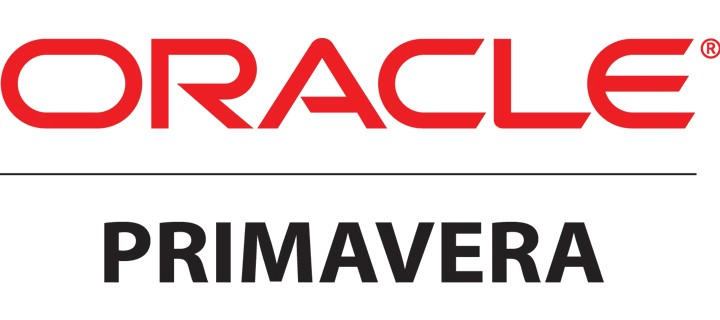
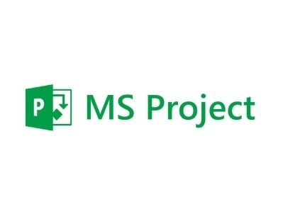
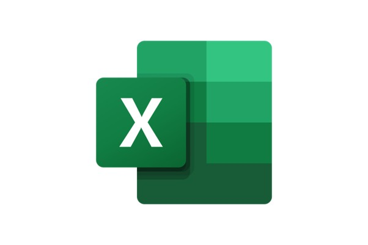
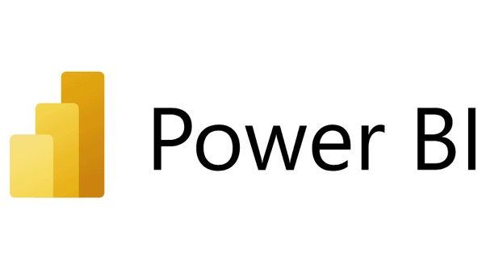
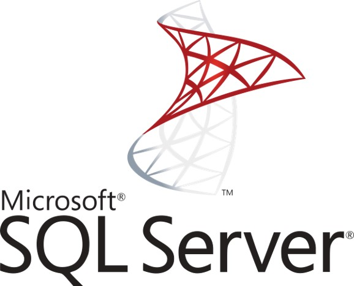
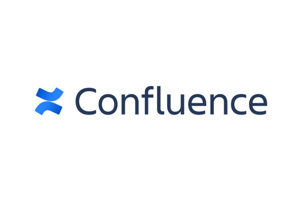

Project & Programme Delivery
End-to-end scheduling, RAID management and milestone governance for complex builds and change programmes — from first plan to handover.
01 — DeliveryProject Delivery & Business Operations Leader — Leeds, United Kingdom
I help organisations turn complex programmes into governed, on-time delivery — RAID logs, dashboards and the discipline to make transformation stick. Fifteen years, one focus: delivery you can measure.
The toolkit I reach for every day






Over 15+ years leading project delivery, business transformation and operations across construction, technology, data, procurement and energy, I've learned that the difference between a programme that slips and one that lands is almost always governance.
I stay close to the details that keep complex programmes on track — the RAID log, the milestone plan, the dashboard that tells leadership the truth about where things really stand. Good governance should be invisible until you need it, and then it's the reason nothing falls through the cracks.
Alongside live programmes, I've mentored more than 30 analysts and operational staff, and keep building on my Agile, data and governance practice through ongoing certifications.
The disciplines I draw on to keep complex programmes governed, transformations grounded, and operations running.
Ongoing training across delivery, data, cloud and governance — from Oracle and Microsoft to Agile and information security bodies.
Associate Member — International Association of Planning, Scheduling, Controls & Coordination
Every engagement is scoped around what the programme actually needs — whether that's full delivery ownership or a sharper governance layer.
End-to-end scheduling, RAID management and milestone governance for complex builds and change programmes — from first plan to handover.
01 — DeliveryProcess redesign, cost reduction and OKR planning frameworks that turn strategic goals into measurable operational outcomes.
02 — TransformationRAID logs, risk registers and Power BI executive dashboards that give leadership real visibility into delivery, budget and risk.
03 — GovernanceLeading teams through downturns, resilience planning and organisational change that protects delivery and client retention.
04 — ChangeNine honest notes from colleagues, managers and partners I've worked alongside — drawn from LinkedIn recommendations.
Emiola's creative thinking, expertise, positive attitude and drive made him an absolute pleasure to work with. He continually delivered results, went above and beyond in providing exceptional service, and showed genuine integrity and respect. He's enthusiastic, personable and an excellent problem solver.
 Efosa Abu, MSc, MBA
Petrophysicist & Operations Geologist — direct manager
Efosa Abu, MSc, MBA
Petrophysicist & Operations Geologist — direct manager
Emiola can be counted on to plan carefully and thoroughly, to mobilize the needed resources, to motivate stakeholders, and to make sure things get done in a timely manner with great results. He worked effectively with us and our major SI partners to ensure the solution delivered to clients fully met their needs.
 Adewale Oladapo
Senior .NET Developer & SAFe Practitioner
Adewale Oladapo
Senior .NET Developer & SAFe Practitioner
Emiola is a conscientious, driven professional with a vivid sense of humour and great knowledge of emotional intelligence. He is an outstanding colleague who contributes in all facets while consistently adding value and delivering results — a superb all-round person.
 Ajibola Olubando
Financial Planning Analyst, FP&A
Ajibola Olubando
Financial Planning Analyst, FP&A
Emiola has a great skill set that makes him outstanding. He has attention to detail and a great sense of humor. He is hard working, punctual and sociable. He is a great team player and likes to help. I hereby recommend him to any employer or group.
 Fred Akinyemi
Enterprise Security Consultant, CISSP
Fred Akinyemi
Enterprise Security Consultant, CISSP
Emiola is a focused team player willing to learn new techniques to get the job done. I observed certain qualities that are required by a team player while working with him — professionalism, high work ethic and consistency.
 Segun Afolahan
Co-founder, Sendbox
Segun Afolahan
Co-founder, Sendbox
Emiola is very detail-oriented and produces outstanding results — dedicated, trusted and a man of integrity.
 Maxwell Okoruwa
Founder, Ironclad Security Limited
Maxwell Okoruwa
Founder, Ironclad Security Limited
Emiola is an expert at managing mission-critical data and is good at his job. He is extremely diligent and has an eye for detail — he can always be depended upon to deliver results.
 Uzoma Ogbuehi
Digital Marketing & Communications
Uzoma Ogbuehi
Digital Marketing & Communications
Emiola is a very focused individual, hardworking and passionate about work. He is very professional and always endeavors to go the extra mile for his clients. Working with him has been quite interesting — he comes highly recommended.
 Adewale Ayannusi
Earth Scientist, Andora Technologies
Adewale Ayannusi
Earth Scientist, Andora Technologies
I met Emiola at a training program. He learns fast and was very willing to share his understanding. As a data analyst, he is good at his job and very professional with it.
 Olugbenga Ogunnaike
Exploration Geophysicist
Olugbenga Ogunnaike
Exploration Geophysicist
I'm always glad to connect with people working on interesting delivery, transformation or operations challenges. Tell me a little about what you're working on and I'll get back to you.